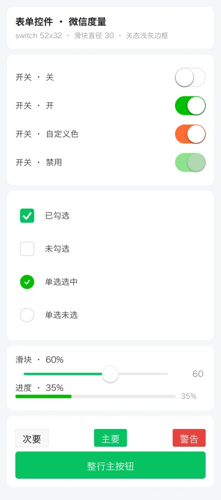
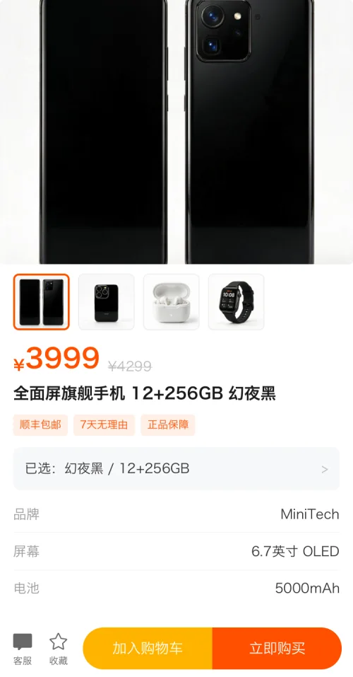
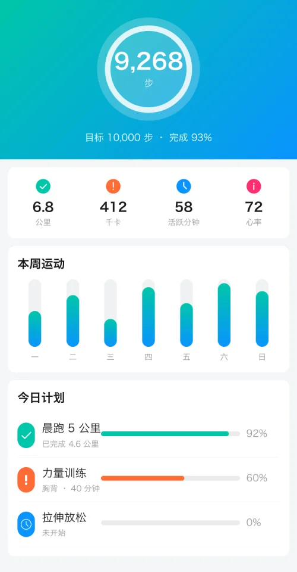
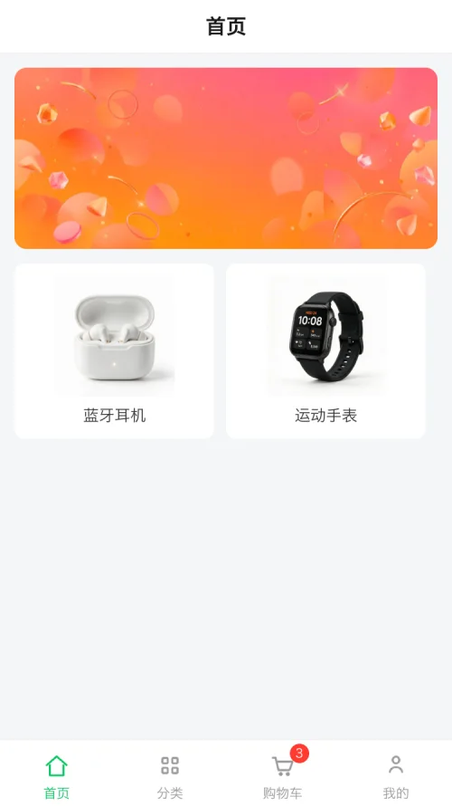
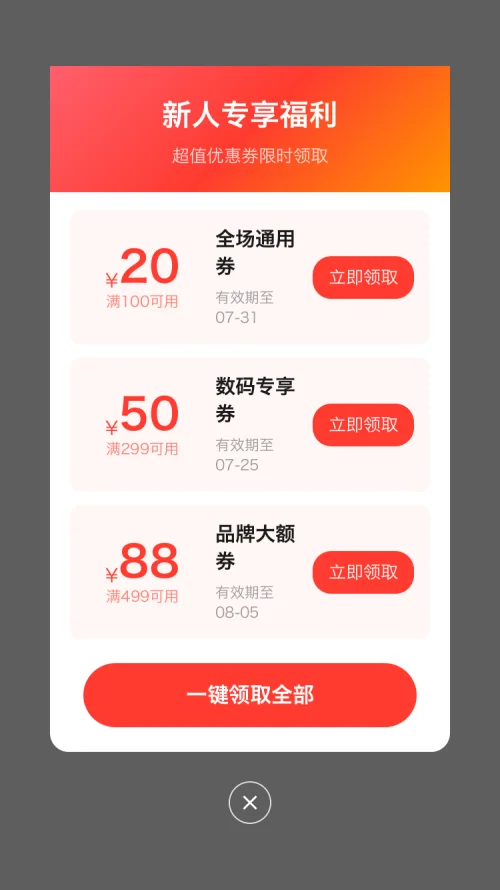
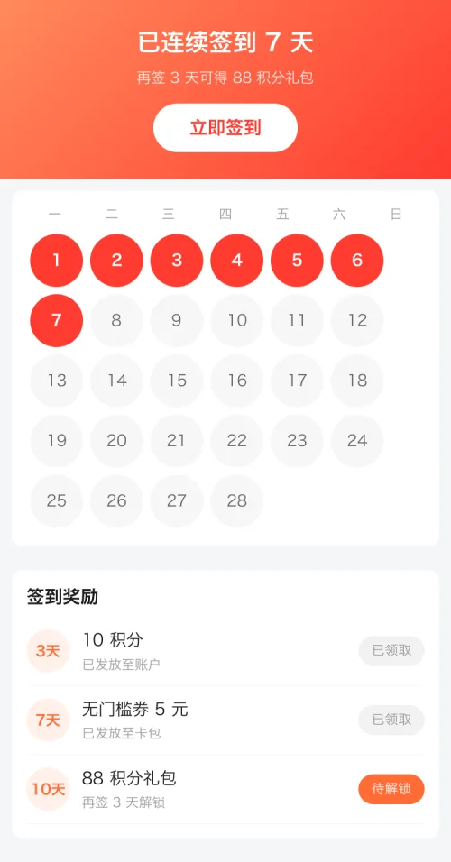
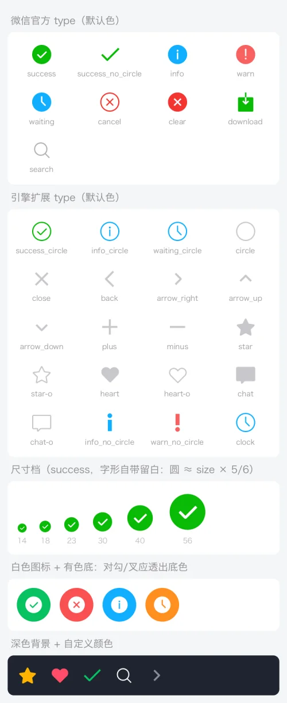
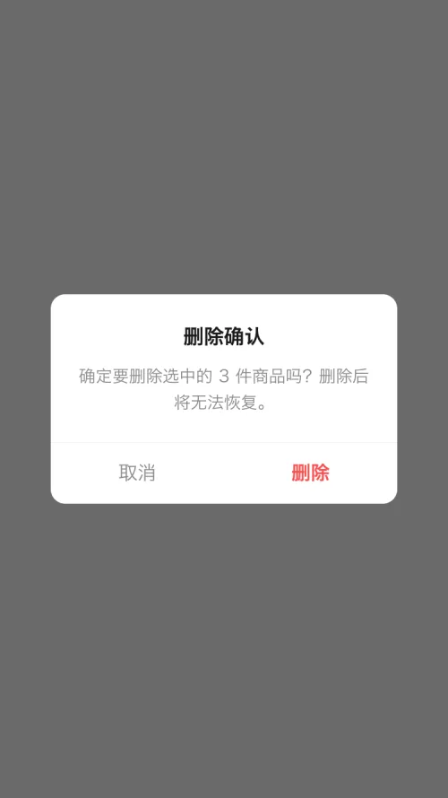
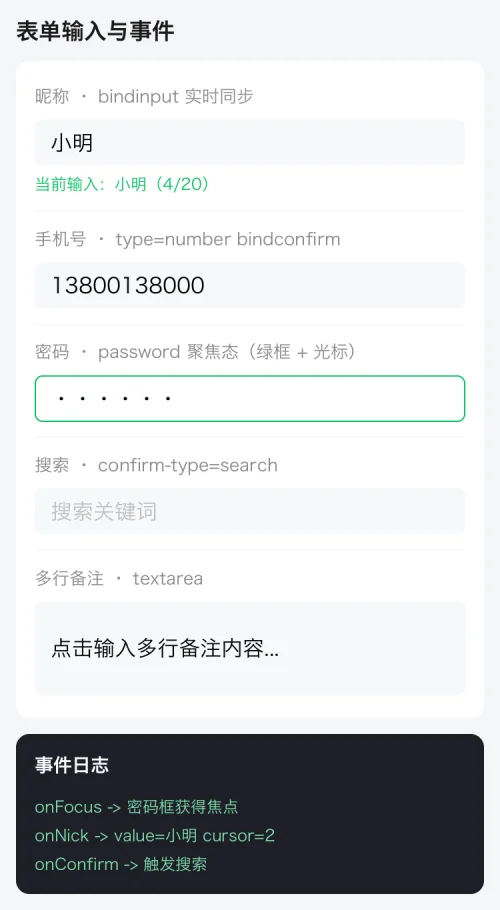
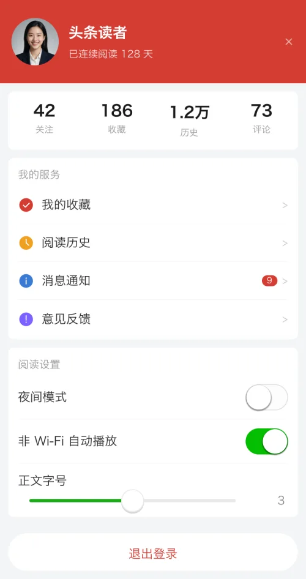

Steady frames hold
On a 144 Hz screen (6.94 ms budget) the shop home's frame interval went from 6.9–25 ms jitter down to 6.7–7.2 ms; the slowest frame from 17.9 ms to 11.4 ms.
Rust · self-rendered · no WebView
A mini-program rendering engine written from scratch in Rust. Hand it a WeChat mini-program source tree (WXML / WXSS / JS / app.json) and a writable pixel buffer, and it draws the UI and runs the interactions. In between there is no browser engine, no platform widgets, no third-party graphics library.
The alignment target is WeChat Skyline — also native rendering, also no DOM.

750×1334 physical pixels, pure CPU
15 pages of the same source, per pixel
plus 39 wx.* APIs
byte-reproducible under a fixed clock
lib 483 + bin 9, zero warnings
none outside the FFI boundary
Why self-render
The engine version follows the OS, the same CSS lays out differently across Android builds, first paint waits for the engine to boot, scroll and gesture feel are decided by the engine, and every native capability needs a bridge. Self-rendering turns all of that into your own code: one copy of layout and paint for every platform, with frame scheduling, gesture arbitration and memory ceilings in your hands.
| Approach | How it works | This engine |
|---|---|---|
| Mini-program WebView render layer | WXML → DOM, handed to a browser engine for layout and paint | No DOM, no browser engine |
| React Native / Weex | JS description → mapped onto platform widgets | No mapping to platform widgets, not at the mercy of their differences |
| Flutter | Dart + Skia, self-rendered | Closest but this is Rust + an in-house rasterizer, no Skia |
| Electron / Tauri | Ship or reuse a browser | No bundled browser; the artifact is ~34MB |
| WeChat Skyline | Native rendering with self-drawn components | Alignment target semantics, feel and event model all follow it |
The price is real too: CSS coverage has to be filled in one property at a time, and
performance is spent CPU cycle by CPU cycle. The only remaining cross-platform difference
comes from system fonts — to remove even that, bundle a font with the app
(assets/SourceHanSansSC-Regular.otf is there for exactly that). Measure first
though: a bundled font costs more memory, not less.
Render pipeline
Eight stages, each with its own diagnostic switch. Between the logic layer and the render
layer there is exactly one channel — the data snapshot
(setData → Arc<Value>). No DOM, no virtual-node diffing,
no GC pressure.
WXML → node tree, WXSS → stylesheet. Hand-written parsers; the CSS selector engine is compiled at parse time and covers tag / class / #id / * / attribute / descendant / child with specificity ordering.
Runs App / Page / Component; setData produces a data snapshot. QuickJS runtime: CommonJS modules, Promise / async, timers, microtasks pumped every frame.
{{ }} expressions plus wx:if / wx:for expanded into a render tree. class / style bound to arrays or objects are joined per CSS semantics.
Matched CSS plus inline style composed into a computed style, with inheritance semantics (color / font-size / line-height …); shorthands and longhands land in a fixed precedence order.
taffy solves the flexbox box model. Text nodes carry a custom measure function, so wrapping and min/max-content come from real glyph widths; a second reflow pass cleans up overflow that is only knowable after layout.
In-house 2D rasterizer: scanline + even-odd fill, 4× supersampled anti-aliasing, rounded corners via cubic Bézier, multi-font fallback, Apple sbix color emoji, two-tier image filtering, gradients, masked box-shadow, clip stack.
@keyframes / transition / wx.createAnimation are evaluated at paint time against a global clock. transform / opacity / colors affect painting only and never trigger reflow → an animated frame costs about the same as a static one.
Normal flow → tabBar → position:fixed overlay, with stacking order matching the browser (a full-screen scrim dims the tabBar too). The overlay uses viewport coordinates, its own canvas, and repaints on demand.
Blit to a window, hand to a host View, or save a PNG. Desktop uses softbuffer, mobile hands the RGBA to the host, headless calls save_png — one codebase, five platforms.
The artifact is an ordinary Rust library (cdylib / staticlib /
rlib) and it asks for one thing:
a writable pixel buffer — so Android, iOS, Windows, macOS and Linux run the
same code, and a CI box with no screen can emit PNGs directly.
Scene gallery
Plain WXML + WXSS + data, 375×667 @2x, no browser involved. They double as byte-reproducible regression baselines — every rendering change is checked against these 65 first. Point at a card to see the full page.

Product detailfixed bottom bar layered over scrolling content Live shoppingvideo layer + overlay stacking
Health dashboardgradients, ring progress, shadows Form controlsswitch / slider / checkbox / radio Picker sheetbottom sheet, implemented in the host layer
tabBarits own layer, a scrim can dim it
Coupon popuprounded punch-outs and gradient tickets News articlefont size applies instantly, long-form wrapping
Check-in calendargrid layout and per-state styling
WeUI iconsofficial vector data, not approximated strokes
Modal dialogshowModal, with paired press states
Input eventsfocus / input / blur / confirm
Profilebookmarks and read state persist across launchesAll 65 images, and how the assets are generated, are in the scene gallery doc (Chinese).
Measured numbers
375×667 @2x (750×1334 physical pixels), written pixel by pixel on the CPU. These numbers are a regression criterion, not a marketing line.
On a 144 Hz screen (6.94 ms budget) the shop home's frame interval went from 6.9–25 ms jitter down to 6.7–7.2 ms; the slowest frame from 17.9 ms to 11.4 ms.
The invalidation for the home page's flash-sale countdown is 45×33 pixels, not the whole screen. When in doubt it falls back to a full frame — leaving stale pixels is far worse than painting once too often.
The page canvas is full-page height in content coordinates, so scrolling just presents a different slice, 2–3 ms per frame. Only the moment you scroll past the painted band does it paint again.
Same source: native rendering on one side, compiled to HTML and screenshotted in Chrome on the other, compared per pixel. What remains is concentrated in bold glyph shapes and subpixel text positioning.
sample-app shop15 pages | 4.55% changed pixels |
|---|---|
news-app news6 pages | 6.33% changed pixels |
Not hand-made demo scaffolding.
tea-app36 pages | Output of uni-app compiled to mp-weixin: a 259KB Vue 3 runtime + 60 CommonJS modules |
|---|---|
real-sample8 pages | WeChat's official demo |
sample-app15 pages | Full shop flow: cart → checkout → orders / shipping, cross-page state in storage |
news-app6 pages | Full news flow: channel swiping, live font size, comments, persisted bookmarks |
Key trade-offs
Every one of these has a mistake behind it; the counter-examples are all written up in the gotchas doc.
The measure context is attached to taffy leaves so real glyphs participate in layout, letting "wrap at the container width" and "a shrinking container pushed out by its content" hold at the same time.
A +4px "safety margin" per text box once made every content-sized badge a ring wider than the browser's.
Changing width / height in @keyframes has no effect; transform / opacity / colors do. What you buy is an animated frame being as cheap as a static one.
Rubber-band damping 1 - 1/(x·0.55/d + 1); bounce-back is a critically damped spring with initial velocity, not a fixed-duration easing; inertia hitting a boundary does not stop dead, it hands its momentum to the spring.
It waits for the first meaningful movement (4px), locks to the dominant axis, then hands off to the outer scroller on "still pushing at the boundary". Swiping vertically inside a horizontal card list scrolls the page; swiping horizontally inside a vertical list moves nothing.
Page stack, overlays, touch state machine, gesture arbitration, picker sheet and pixel composition all live in src/host/; only frame scheduling is per-platform. A per-pixel script plus input-behaviour tests guard it from both sides.
The premise is "give me a pixel buffer and I will draw". Anti-aliasing was not switched to subsampling either — measured against Chrome the difference went up, from 4.7% to 5.3%.
All eight, plus 13 classes of gotchas, are in the gotchas log and architecture & implementation (Chinese).
Getting started
Desktop needs only the Rust toolchain. Embedding it in an app takes one View.
# needs Rust (https://rustup.rs)
cargo build --release
# pick a sample mini-program interactively
./target/release/mini-launcher
# or name one directly
./target/release/mini-app-window sample-app
./target/release/mini-app-window sample/tea-app --route pages/index/index# images without a window (CI / regression)
./target/release/mini-app-window sample-app --route pages/index/index \
--settle 0 --time 2 --snapshot target/shot
# action flags run in the order written, and repeat
# --touch x,y --swipe x1,y1,x2,y2 --drag px×frames
# --type text --key enter --wheel
# --wait seconds --frames N// 1) build the libs → jniLibs, then publishToMavenLocal
// bash tools/build-mobile.sh android
// cd sdk/android && ./gradlew publishToMavenLocal
val mini = MiniProgramView(this)
setContentView(mini)
mini.open(File(filesDir, "my-mini-app")) // the unpacked mini-program directory
override fun onBackPressed() {
if (!mini.goBack()) super.onBackPressed() // exit only once the page stack is empty
}
override fun onResume() { super.onResume(); mini.onHostResume() }
override fun onPause() { super.onPause(); mini.onHostPause() }// 1) build the lib → sdk/ios/MiniRender.xcframework (device + simulator)
// bash tools/build-mobile.sh ios
let mini = MiniProgramView(frame: view.bounds)
view.addSubview(mini)
mini.open(appDir: unpackedDir)
if !mini.goBack() { navigationController?.popViewController(animated: true) }coalescedTouches, nothing dropped.wxapkg and does no signature checking.<web-view> / <map> live in WeChat's native component layer. The engine computes position and parameters; you place the widget with WKWebView / android.webkit.WebView / ArkUI Web().Scope
"Deliberately not" is a decision, not a backlog item.
swiper, scroll-view, picker-viewtouchcancel is synthesized when scrolling takes over)wx:if / wx:for / block, the expression engine, class / style bindings, custom components (style isolation + their own data scope)@import, CSS variables, rpx, calc(), gradients, shadows, transform / transition / @keyframeswx.* APIs: request (with abort), the full storage set persisted across launches, Toast / Loading / Modal, five routing APIs, the full device-info setpageLifetimes 3)<video> (MP4 demux + H.264 software decode + audio)| GPU rendering | Only pure CPU can produce images where there is no GPU (CI, embedded) |
|---|---|
Parsing .wxapkg / signature checks | Subpackages, staged rollout and integrity belong to the host; the engine reads a directory |
Compiling <web-view> / <map> into the engine | In WeChat these are native-layer components: the engine computes position, the host places the widget |
Remote fonts via wx.loadFontFace | Fonts come from the system. The API exists and calls back success, but nothing is downloaded |
| Accommodating code that deviates from WeChat semantics | Skyline is the only alignment target |
wx:key reuse semantics, template / slot / wxs, scroll-view scroll events, <video> playback events, cloud APIs such as wx.login, edge-swipe back in the mobile SDK — each one is written up with its impact.
<iframe>) — use a WebViewStack
Project size 240 .rs files / ~53k lines (29 of them test files); any file
over 500 lines gets split. Outside the FFI boundary the whole library has
no unsafe and no static mut.
wx.request and remote imagesAndroid .so, stripped | 34.4 MB |
|---|---|
iOS static library .a | 184 MBshrinks a lot through dead-code elimination once linked |
| Unit tests | lib 483 + bin 9 |
|---|---|
| Scene gallery | 65 images, byte-reproducible |
| Partial-repaint check | 5 scenes, byte-identical |
| SDK vs desktop | sample 15/15, news 6/6 pixel-identical |
| Compiler warnings | 0 |
setData still rebuilds the whole layout tree — needs incremental tree patching; the infrastructure is in placeDocumentation
The documents below are in Chinese; the README is available in English.
How a frame is drawn, layering and module split, how frame cost was driven down, partial repaint, scroll feel and touch alignment, taffy adaptation
Capability matrix, T1–T9 checklists and criteria, measured memory breakdown, 13 known gaps
Minimal integration, the host's nine jobs, C ABI, iOS / Android / HarmonyOS steps, acceptance checklist
13 classes of "what was once wrong": symptom → root cause → current approach → regression criterion
65 real renders (also the regression baselines) and how the assets are generated
Sample mini-programs, live browser preview, compiling to HTML, Rust / C / mobile code samples
Item-by-item measurements of swipe / tap / longpress / gesture against WeChat
Three-line integration and the three conventions you must know